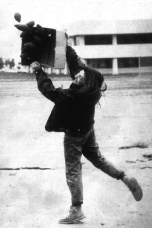
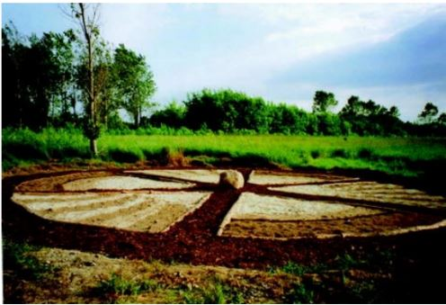

Keeping our soil healthy plays a key role in keeping the human race alive. Some of the soil's main functions include being a medium for plant growth, assisting in water retention/filtration, acting as a base for human structures, and promoting biodiversity and habitats. For many years our soil was degraded for human gain without knowing the lasting consequences of our actions. Conventional agricultural practices that played a part in soil damage include deep tillage, deforestation, lack of crop rotations, and more. This in turn, broke down the soil structure allowing for erosion by wind and water, on a massive scale. An example of this is the dust bowl which took place in the 1930’s.
In our reading (Soil and Culture: Chapter 2 - Deforestation and Erosion Captured in Historical Art of the Pearl River Delta Region, China) the authors talk about the Western and Chinese artists who visited the region and created drawings and paintings of it while doing so. Looking back in time through these paintings shows us that the land has been destroyed and used for other purposes. Through deforestation the lack of forest cover, grass cover and the exposure of rock and root systems have led to erosion, which can be clearly seen in these paintings. The art makes people realize just how much the land has changed over a large time scale.
Kathryn Miller, Seed Bombs, 1992. Santa Barbara, California. Hand-packed soil and seeds of native plants. Reproduced here by permission of the artist
Sustainable art is a topic that is also heavily explored in our reading (Soil and Culture: Chapter 4 - Merging Horizons - Soil Science and Soil Art.) One use of this method can be seen in Paolo Barrile’s Message Earth where he photographed a woman tossing out hand-packed soil and seeds of native plants to repopulate local vegetation. Additionally, sustainability used in art can also be seen in Hardy Buhl and Project Group “Bodenkunst auf brachflachen” which translates to the saying “floor art in fallow land.” Today, the installation can’t be seen unless you knew it was there. The granite rock in the middle might peak out but the ground floor is replaced with vegetation all the way around. This didn’t disturb the soil horizon but rather offered it a chance to reclaim and grow back fuller and more aggressively.
Hardy Buhl and Project Group “Bodenkunst auf Brachflächen” Soil Cake Installation at the Rieselfeld Sculpture Park, Berlin-Buch. Photo: Hardy Buhl, 2006. Reproduced here by permission of the TU-Berlin, Dept. Of Soil Protection
One of the greatest things about art is the influence it can have on people. This influence can be created by artists and soil scientists as they spread awareness about the degradation of our soil, as well as persuade people to care about our soil and appreciate all the things it provides to us. Alexandra Toland and Gerd Wessolek go into more detail about this idea in a book titled “Soil and Culture,” published online on January 1st, 2009. According to a chapter titled Merging Horizons in the book,“professional artists should be invited more often to conferences, into laboratories, and to participate in engineering and agricultural experiments, while scientists might offer their expertise at environmental art symposiums, exhibitions and seminars. Creativity goes both ways. It must only be recognized and cultivated in settings that are home to both the arts and the sciences.”
[1] Parham, W.E. (2010). Deforestation and Erosion Captured in Historical Art of the Pearl River Delta Region, China. In: Landa, E., Feller, C. (eds) Soil and Culture. Springer, Dordrecht. https://doi-org.libproxy.unl.edu/10.1007/978-90-481-2960-7_2
[2] Ugolini, F. (2010). Soil Colors, Pigments and Clays in Paintings. In: Landa, E., Feller, C. (eds) Soil and Culture. Springer, Dordrecht. https://doi-org.libproxy.unl.edu/10.1007/978-90-481-2960-7_5
[3] Toland, A., Wessolek, G. (2010). Merging Horizons—Soil Science and Soil Art. In: Landa, E., Feller, C. (eds) Soil and Culture. Springer, Dordrecht. https://doi-org.libproxy.unl.edu/10.1007/978-90-481-2960-7_4